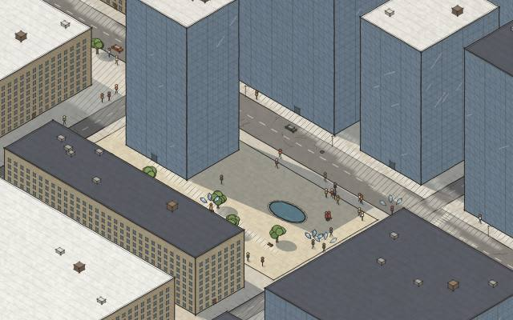
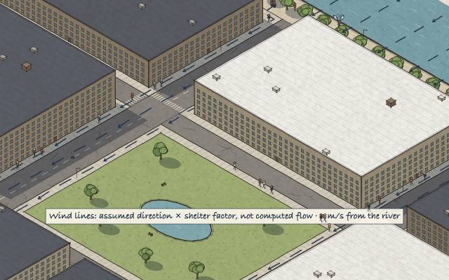

Thermal-Ink Atlas
Hand-inked city blocks that show urban heat through a heat-wave day. Each block is invented, not a real place, and its surface temperatures are simulated with a simple, cited energy-balance model. Each block is one offline HTML file.

Asphalt street vs pocket park
An old sunbaked street, one block from a shady lawn and pond.
Simulated block · invented geometry · modelled temperatures
Press T for heat, H for the hour.

Sponge-city and cool-roof retrofit
The same block before and after: cool and green roofs, permeable paving, rain gardens, young trees.
Simulated block · invented geometry · modelled temperatures
Drag the divider or press B; slide the days since rain.

Glass towers and street canyons
Deep streets shade by day and cool slowly at night; glass façades throw hot spots of reflected sun onto the street.
Simulated block · invented geometry · modelled temperatures
Switch the glass (clear, low-e, mirror) or press G.

Waterfront and wind corridors
Streets that point along the river wind stay breezier and cooler; the river cools only a short way, and the still pond is warm at night.
Simulated block · invented geometry · modelled temperatures
Press W for wind lines, A for the air overlay; calm or breezy.